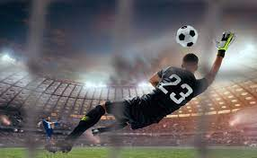
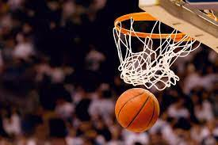
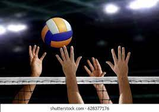
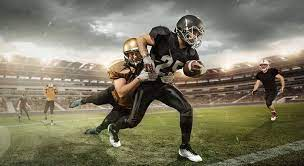

El fútbol, futbol o balompié es un deporte de equipo jugado entre dos conjuntos de once jugadores cada uno, mientras los árbitros se ocupan de que las normas se cumplan correctamente. Es, ampliamente, considerado el deporte más popular del mundo, pues lo practican unas 270 millones de personas.
El baloncesto, también conocido como básquetbol, basquetbol o simplemente básquet, es un deporte de equipo, jugado entre dos conjuntos de cinco jugadores cada uno durante cuatro períodos o cuartos de diez minutos cada uno ―doce minutos cada cuarto en la NBA.
Deporte que se practica entre dos equipos de seis jugadores en una cancha rectangular dividida transversalmente por una red situada a 2,43 m de altura; el objetivo es golpear el balón con manos o brazos para pasarlo por encima de la red, evitando que la pelota bote en el campo propio; los partidos constan de tres mangas de 15 puntos cada una. "en el voleibol, los jugadores pueden golpear tres veces la pelota antes de lanzarla al campo contrario"
Deporte que se practica entre dos equipos de once jugadores que tratan de llevar un balón amelonado más allá de una línea de meta del equipo contrario; para jugar el balón se utilizan las manos y los pies y para impedir el ataque se puede cargar y derribar al jugador que lleva el balón; vence el equipo que consigue más puntos en los 60 minutos que dura el encuentro, divididos en cuatro partes iguales.
Hola1
Hola
Hola2